<link rel="import" href="/bower_components/polymer/polymer.html">

<link href='https://fonts.googleapis.com/css?family=Roboto:400,700' rel='stylesheet' type='text/css'>
<link href='https://fonts.googleapis.com/css?family=Ubuntu'         rel='stylesheet' type='text/css'>
<link href='https://fonts.googleapis.com/css?family=Titillium+Web'  rel='stylesheet' type='text/css'>
<link rel="import" href="landing-page-styles.html">

<link rel="import" href="/assets/user-session-status/user-session-status.html">

<link rel="import" href="/bower_components/iron-icons/iron-icons.html">
<link rel="import" href="/bower_components/iron-icons/av-icons.html">
<link rel="import" href="/bower_components/iron-icons/communication-icons.html">

<link rel="import" href="/bower_components/yarnball/widgets/web/web.html">
<link rel="import" href="/bower_components/yarnball/widgets/node/node.html">
<link rel="import" href="/bower_components/yarnball/widgets/link/link.html">

<dom-module id="yb-landing-page">
  
  <style include="landing-page-styles"></style>

  <template>
    
    <section class="title">
      
      <yb-user-session-status id="userSessionStatus"></yb-user-session-status>
    </section>
    
    <section class="hero">
      <div class="hero-nav">
        <paper-button class="hero-nav-button hero-nav-button-begin" on-tap="begin">
          <iron-icon icon="av:play-arrow"></iron-icon>
          Begin
        </paper-button>
        <paper-button class="hero-nav-button hero-nav-button-intro">
          <iron-icon icon="communication:chat-bubble"></iron-icon>
          Intro
        </paper-button>
        <paper-button class="hero-nav-button hero-nav-button-api">
          <iron-icon icon="icons:code"></iron-icon>
          API
        </paper-button>
      </div>
    
      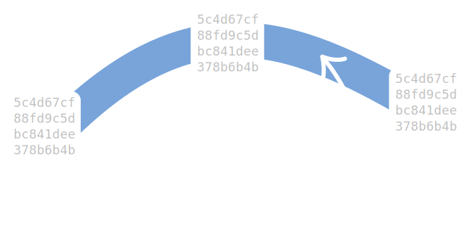
      
      <div class="hero-cards">
        <span class="hero-card">
          <label>Set</label>
          
        </span>
        <span class="hero-card">
          <label>Chain</label>
          
        </span>
        <span class="hero-card">
          <label>Tree</label>
          
        </span>
        <span class="hero-card">
          <label>Multi-set</label>
          
        </span>
        <span class="hero-card">
          <label>List</label>
          
        </span>
        <span class="hero-card">
          <label>Map</label>
          
        </span>
      </div>
    </section>
    
    <section class="yarnball-is">
      <h2 class="yarnball-is-heading">Yarnball is..</h2>
      <div class="yarnball-is-cards">
        <span class="yarnball-is-card">
          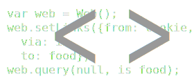
          <label>a graph-based database library</label>
        </span>
        <span class="yarnball-is-card">
          
          <label>a graphical user-interface</label>
        </span>
      </div>
    </section>
    
    <div class="intro-separator">
      <iron-icon icon="communication:chat-bubble"></iron-icon>
      <span>Intro</span>
    </div>
    
    <label id="first-intro-element" class="intro-label">Building Blocks</label>
  
    <section class="intro-section first-intro-section">
      
      <div class="intro-card-group">
        <div class="intro-card">
          <div class="intro-card-content">
            <yb-node node-id="1e436f8bb0da1c31e9382450fdd51eaa"></yb-node>
          </div>
          <label>Node</label>
        </div>
        <div class="intro-card">
          <div class="intro-card-content">
            <yb-link
              from="1e436f8bb0da1c31e9382450fdd51eaa"
              via ="ac1bbe77ed038accd45f7e906d4257d2"
              to  ="a0f9922a65546eacd04b910998744300">
            </yb-link>
          </div>
          <label>Link</label>
        </div>
        <div class="intro-card">
          <div class="intro-card-content">
            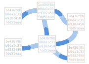
          </div>
          <label>Web</label>
        </div>
      </div>
      
    </section>
    
    <section class="intro-section">
      <div class="intro-card-float">
        <yb-node node-id="1e436f8bb0da1c31e9382450fdd51eaa"></yb-node>
      </div>
      <p>
        A node is a randomly generated number.
      </p>
      <p>
        It can represent things, concepts, or anything.
      </p>
    </section>
    
    <section class="intro-section align-right">
      <div class="intro-card-float">
        <yb-node node-id="5c4d67cf88fd9c5dbc841dee378b6b4b"></yb-node>
      </div>
      <p>
        A node can be given a name, for example:
      </p>
    </section>
    
    <section class="intro-section">
      <div class="intro-card-float">
        <yb-link
          from="1e436f8bb0da1c31e9382450fdd51eaa"
          via ="ac1bbe77ed038accd45f7e906d4257d2"
          to  ="a0f9922a65546eacd04b910998744300">
        </yb-link>
      </div>
      <p>A link connects three nodes together.</p>
      <p>It connects <em>from</em> the first node, <em>via</em> the second node, <em>to</em> the last node.</p>
    </section>
    
    <section class="intro-section align-right">
      <div class="intro-card-float">
        
      </div>
      <p>A collection of links is called a web.</p>
      <p>A web can represent any kind of information, arranged in any kind of way.</p>
    </section>
    
    
    <label class="intro-label">Basic Structures</label>
    
    <section class="intro-section">
      <p>
        Using nodes and links, any kind of structure can be constructed. Here are some basic examples.
      </p>
    </section>
    
    <section class="intro-section">
      <label>Set</label>
      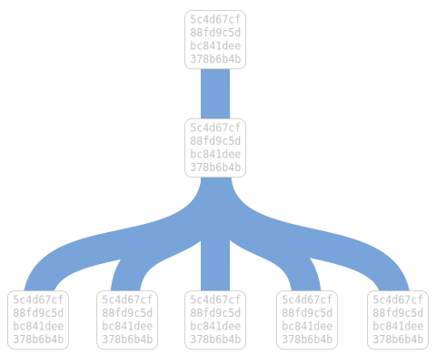
    </section>
    
    <section class="intro-section">
      <label>List</label>
      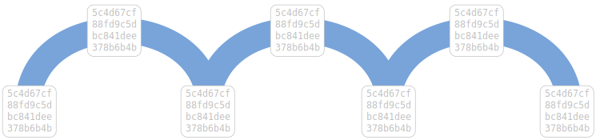
    </section>
    
    <section class="intro-section">
      <label>Tree</label>
      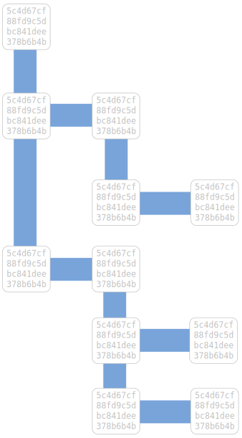
    </section>
    
    <label class="intro-label">Examples</label>
    
    <section class="intro-section">
      <label>Music collection</label>
      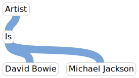
    </section>
    
  </template>
  
  <script>
    (function() {
      Polymer({
        is: 'yb-landing-page',
        behaviors: [WebSource],
        begin: function() {
          require(['page/page'], function(page) {
            page('/scratchpad');
          });
        },
      });
    })();
  </script>

</dom-module>